Abstract
Classifier-Free Guidance (CFG) has emerged as a central approach for enhancing semantic alignment in flow-based diffusion models. In this paper, we explore a unified framework called CFG-Ctrl, which reinterprets CFG as a control applied to the first-order continuous-time generative flow, using the conditional-unconditional discrepancy as an error signal to adjust the velocity field. From this perspective, we summarize vanilla CFG as a proportional controller (P-control) with fixed gain, and typical follow-up variants develop extended control-law designs derived from it. However, existing methods mainly rely on linear control, inherently leading to instability, overshooting, and degraded semantic fidelity especially on large guidance scales. To address this, we introduce Sliding Mode Control CFG (SMC-CFG), which enforces the generative flow toward a rapidly convergent sliding manifold. Specifically, we define an exponential sliding mode surface over the semantic prediction error and introduce a switching control term to establish nonlinear feedback-guided correction. Moreover, we provide a Lyapunov stability analysis to theoretically support finite-time convergence. Experiments across text-to-image generation models including Stable Diffusion 3.5, Flux, and Qwen-Image demonstrate that SMC-CFG outperforms standard CFG in semantic alignment and enhances robustness across a wide range of guidance scales.
Method Overview
We observe that the discrepancy e between the conditional and unconditional velocity predictions gradually diminishes in diffusion flow progress, effectively serving as a natural error signal. This observation motivates us to reinterpret CFG not as a static extrapolation rule, but as a form of feedback control applied to the latent generative flow.
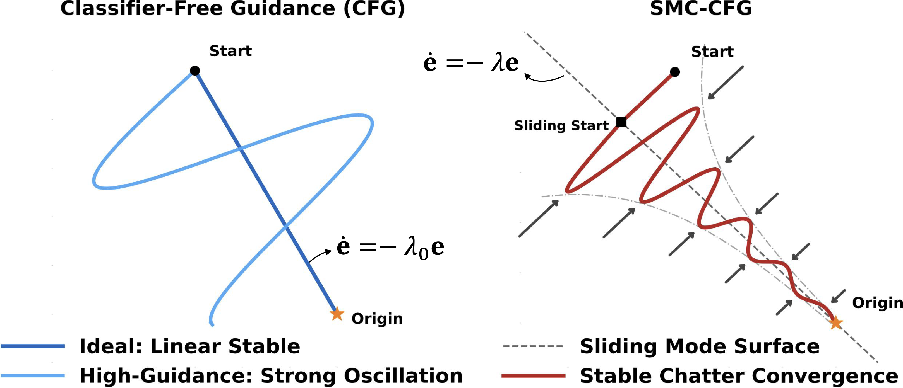
Theoretical Formulation
Based on this observation, we explore a unified theoretical framework called CFG-Ctrl for Classifier-Free Guidance in flow matching diffusion. Under this CFG-Ctrl paradigm, the standard CFG corresponds to a proportional controller (P-control) that amplifies the semantic error with a fixed gain and feeds it back into the system, while existing CFG variants can be regarded as alternative designs of feedback control laws. However, most of these methods rely on approximately linear control laws for feedback, which cannot ensure stable convergence when the underlying generative dynamics become highly nonlinear—particularly as model capacity increases or the guidance scale becomes large.
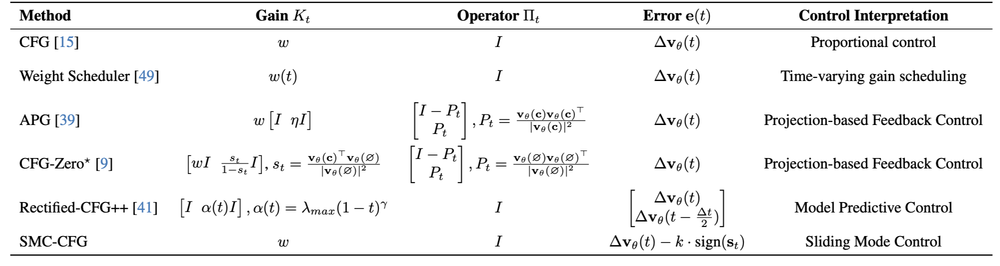
Sliding Mode Control CFG
To address this, we further propose Sliding Mode Control CFG (SMC-CFG), a control-based guidance mechanism that directs the flow trajectory onto a rapidly converging sliding mode surface. This design draws on the proven success of Sliding Mode Control (SMC) in stabilizing nonlinear dynamical systems. As shown in the first figure above (right), our approach constructs a sliding mode surface over the semantic prediction error, corresponding to the gray dashed line in the figure. We also introduce a switching control term that enforces nonlinear, feedback-driven corrective force, which are represented by the arrows at both sides of the convergence curve. This design adaptively regulates the evolution of the flow trajectory and preserves stability even under strong guidance.
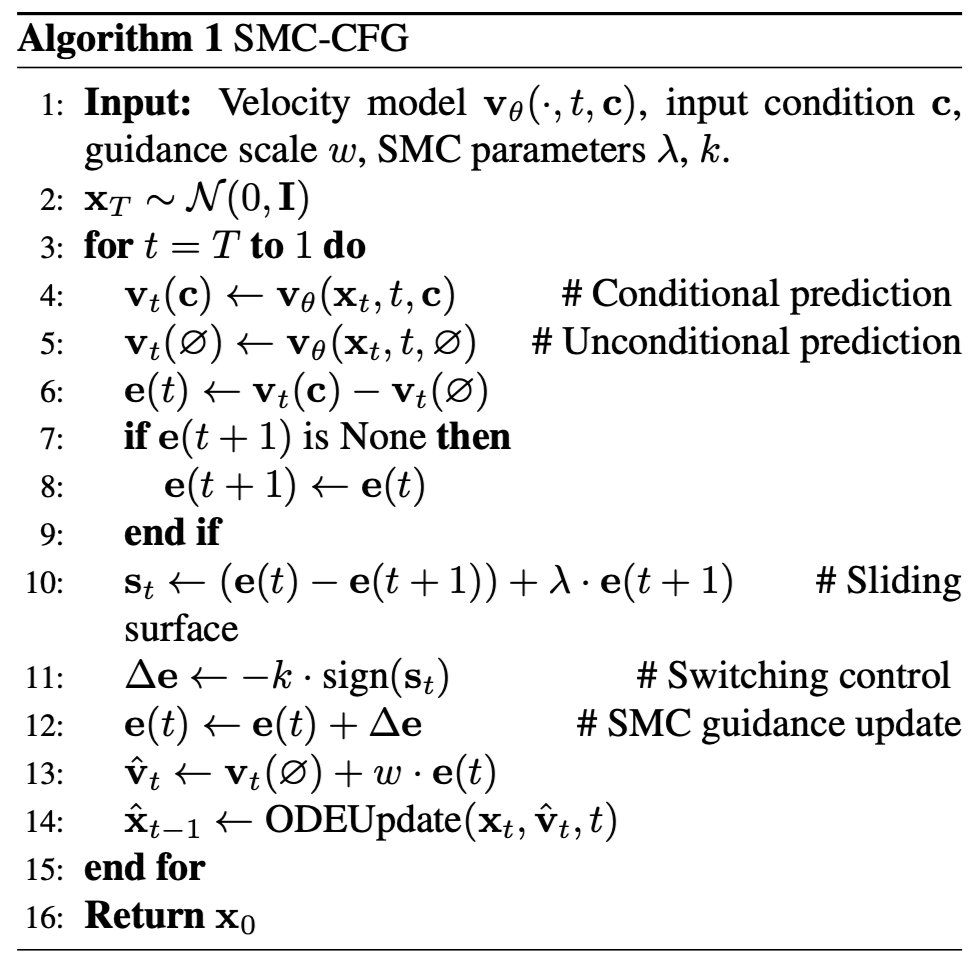
Visual Comparison
In the center of the scroll, there is large, ornate script that reads: FORRBIDDEN KNOWLEDGE.
A cat is looking at the other cat on the computer screen.
A teddy bear is sitting in a cooking pot on a stove.
A pyramidal candle and a diamond candlestick holder.
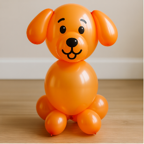
A balloon on the bottom of a dog
A blue and white bus labeled subway shuttle.
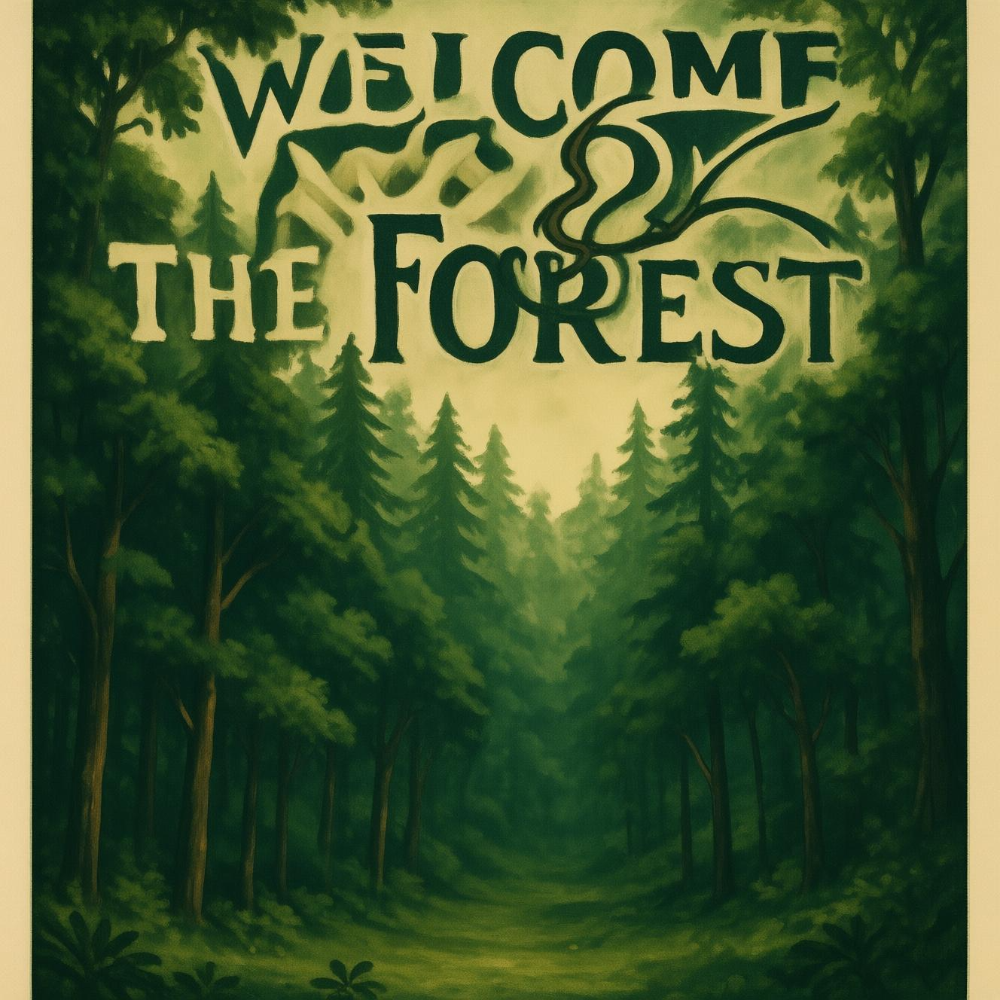
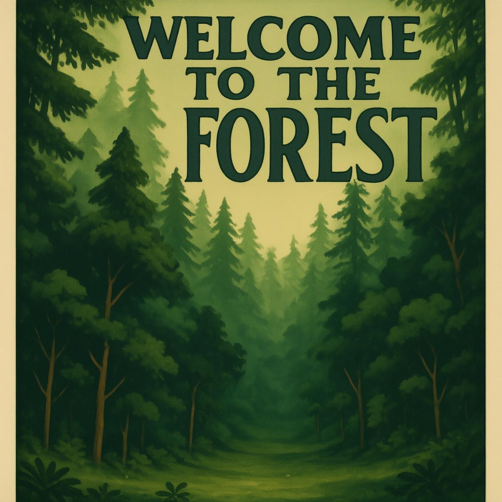
A poster with large centered text that reads: WELCOME TO THE FOREST.
Man and child on a Kawasaki motorcycle near an open garage door.
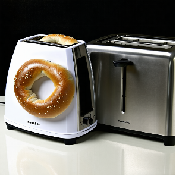
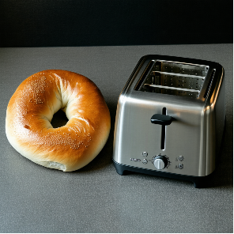
A round bagel and a square toaster.
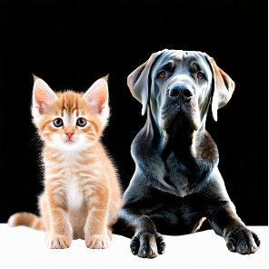
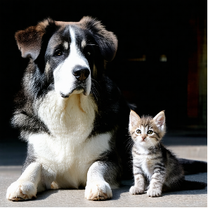
A small kitten and a big dog sat side by side.
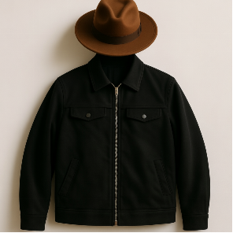
A black jacket and a brown hat.
BibTeX
@article{YourPaperKey2024,
title={Your Paper Title Here},
author={First Author and Second Author and Third Author},
journal={Conference/Journal Name},
year={2024},
url={https://your-domain.com/your-project-page}
}